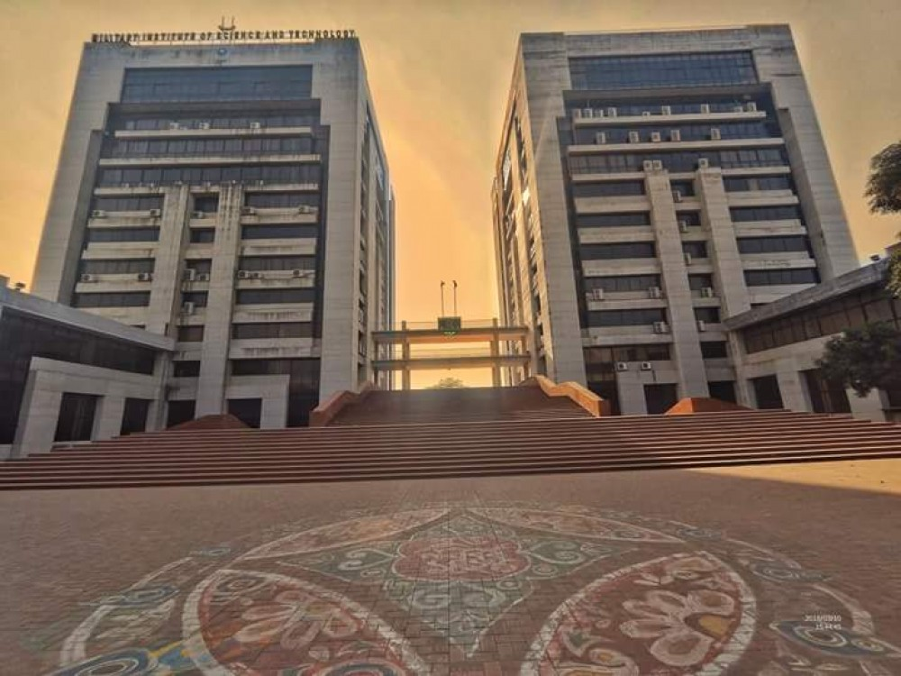

Campus Tour
- MIST has mainly one Campus which is located at the heart of the Mirpur Cantonment with a dazzling Double twin-Towers
which has become the Hallmark of MIST.
- MIST Plaza located at the center of these
towers is the heart of students’ activities.
- Military students of Bangladesh Military Academy, Bangladesh Naval Academy, and Bangladesh Air Force Academy pursue
their graduate engeeringstudies under MIST from their own campuses.
MIST has the following four campuses:
This is located at the heart of the Mirpur Cantonment with a dazzling Double Twin- Towers which has become the Hallmark of MIST. MIST Plaza located at the center of these towers is the heart of students’ activities.
BMA Campus

Bangladesh Military Academy is located at Bhatiary, near Chottogram Hill Tracts, in the Chottogram District, about 13 kilometers north of Chottogram City. The Academy is situated on the slopes of the Sitakunda hill ranges and the shore of the Bay of Bengal. Officer Cadets of BMA who undergo engineering studies as a part of their undergraduate academic curriculum, become the students of MIST.
BAFA Campus

Bangladesh Air Force Academy is located in the district town of Jashore at BAF Base Matiur Rahman. It is situated at 140 km South-West of Capital Dhaka and can be reached by air, road or train. Officer Cadets of BAFA carry out their undergraduate engineering studies under MIST.

The Bangladesh Naval Academy is situated at the mouth of the Karnaphuli River at Patenga, Chattogram. Bathed by the river Karnaphuli on the east and sheltered on the south by Bay of Bengal, BNA stands in a panoramic natural picturesque in an isolated landscape of the country. It is surrounded by heart- snatching lush green vegetation in Patenga sea-beach, 14 km south of the City Centre of the hustling Port City Chottogram. Bangladesh Naval Academy is well connected by rail, road and air from Dhaka. Officer Cadets of BNA carry out their undergraduate engineering studies under MIST.
Main Campus Location